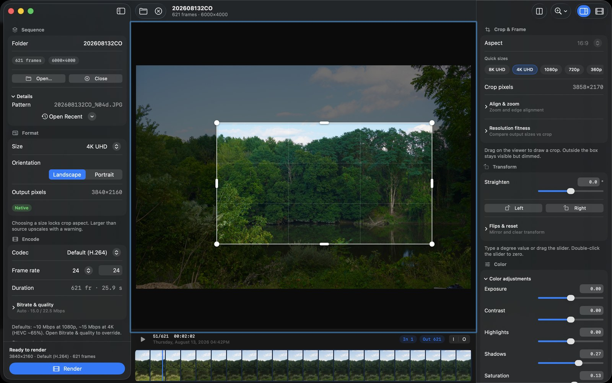
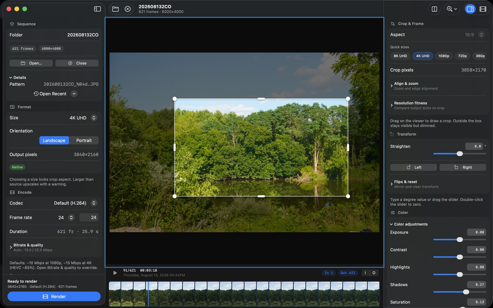
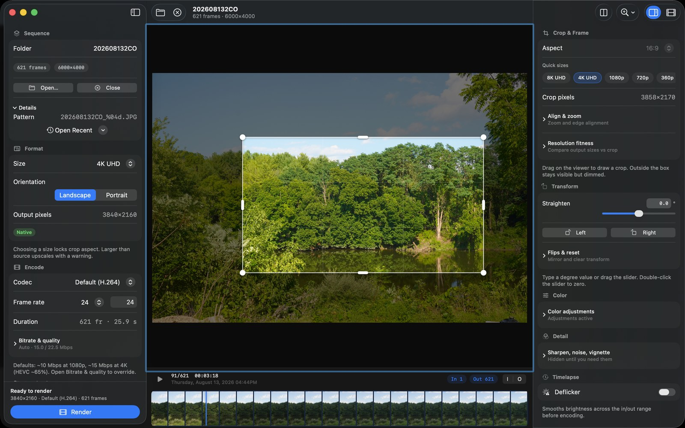
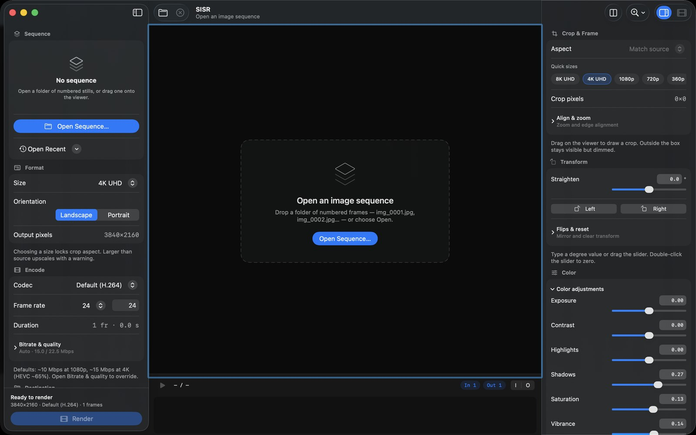
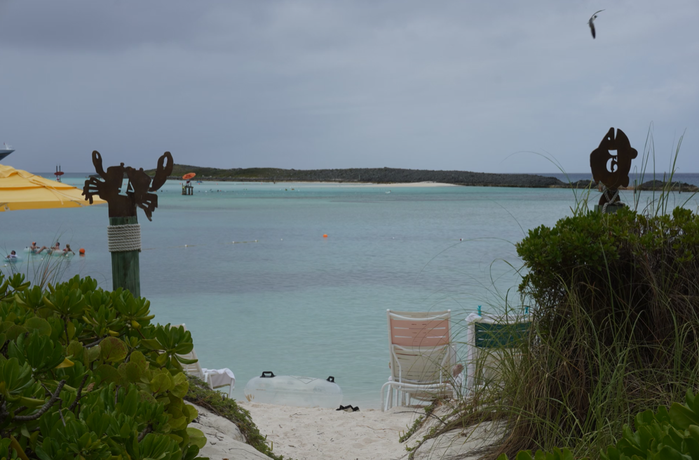
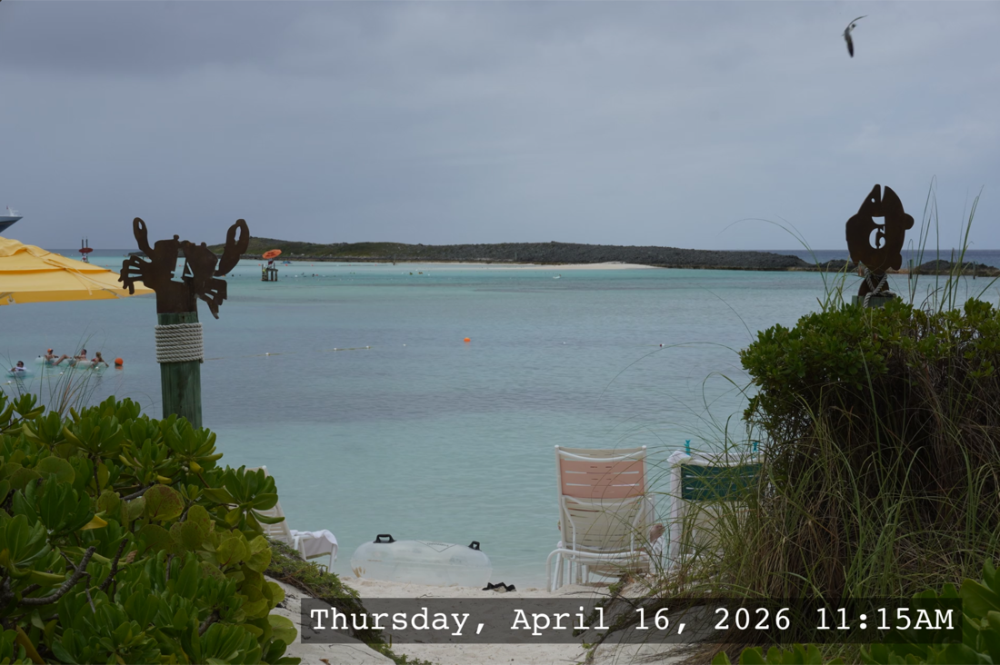
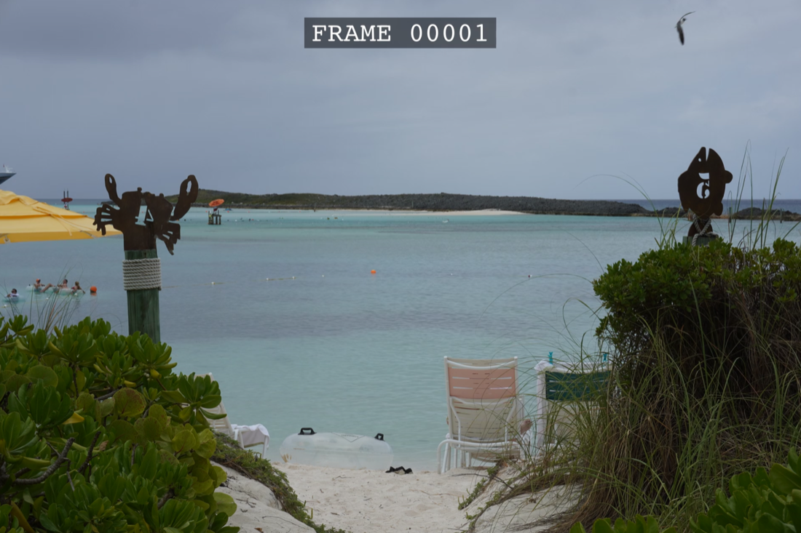
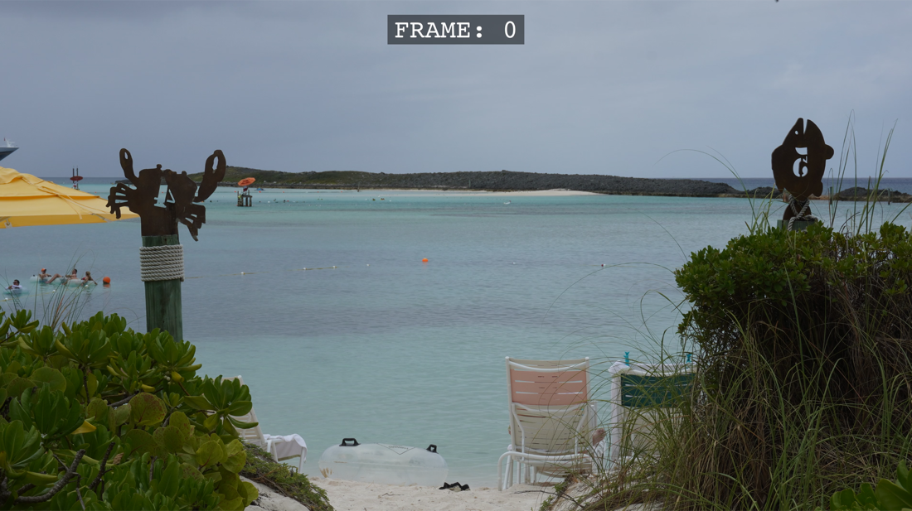

Live preview & filmstrip
Scrub frames with a thumbnail filmstrip, set in/out points, and see crop and color updates as you work.

New in version 1.1
SISR (Simple Image Sequence Renderer) is a free, open-source native Mac app for photographers and creators — rewritten in SwiftUI with AVFoundation (no FFmpeg). Open a numbered stills folder, preview the sequence, crop and grade, then export MP4, MOV, or GIF — with optional date overlays and sizes ready for Instagram, HD, or 4K. Version 1.1 adds advanced deflicker for time-lapse that jumps between sun, cloud, and day-to-night exposure.
Free on the Mac App Store. Requires macOS 14 or later.
Three panes: sequence & encode on the left, live viewer and filmstrip in the center, crop and color on the right — powered by SwiftUI and AVFoundation.




Scrub frames with a thumbnail filmstrip, set in/out points, and see crop and color updates as you work.
Interactive crop handles, straighten with a slider or typed degrees, 90° rotate, and quick sizes from 8K to 360p — including portrait for social.
Exposure, contrast, highlights, shadows, saturation, plus optional sharpen, noise reduction, and vignette — grouped so the inspector stays calm.
H.264 (and more) with auto bitrates sized for 1080p and 4K, or open Bitrate & quality to override. Analyze deflicker first and preview the balanced frames before you render.
Burn in capture date from camera metadata when available — useful for builds, gardens, and trips.
Presets for vertical social (9:16), HD, and 4K. Crop diagrams show how Keep top / Center / Keep bottom line up with the photo.
A typical time-lapse can go from full sun to full cloud in a single frame, or step its exposure all the way to night. Version 1.1 measures brightness, contrast, and color on the cropped, graded picture — then shows the correction on a chart and in the viewer before you render. How to use it.
Smooths frame-to-frame exposure jitter from aperture flicker or an auto-exposure hunt, and keeps the slow brightness changes that belong in the shot.
For sequences that swing between direct sun and overcast. A wide, outlier-resistant window ignores a single bright gap, then matches contrast, color, and regional brightness so a sunlit foreground and a shaded sky can both settle.
For Holy Grail sunrises and sunsets. SISR reads shutter, aperture, and ISO from each frame and removes the exposure steps the camera made, while the natural fade from day to night stays in place.
Holds the whole in/out range at one brightness — the median of the range, or a reference frame you pick — when you want a consistent exposure from the first frame to the last.
A light pass for sequences that are almost clean and only need a little evening out.
Analyze the sequence, then scrub the chart or the filmstrip. Orange is measured brightness, the dashed line is the target, and green is the corrected result. The viewer shows that frame’s correction immediately.
Under the modes, Advanced controls choose how the balance is built: robust, Gaussian, or average smoothing; full-frame, ignore-sky, or center metering; a regional brightness grid; and separate switches for contrast matching, color balance, and camera EXIF. A max-correction limit keeps any one frame from being pushed too far.
Deflicker evens out exposure and color. Hard shadows that move between sunny and overcast frames stay in the picture — they are geometry, not a brightness offset.
Real still frames from SISR — overlays and crop presets as they appear on screen.




SISR is free on the Mac App Store for macOS 14 or later.
macOS
SwiftUI preview, interactive crop & color, AVFoundation encode. Work one sequence at a time with a live filmstrip.

Building it yourself? Notarized zips stay on
GitHub Releases
(app-v* → SISR-native-*-macos-universal.zip). Unzip and
move SISR.app to Applications, or follow the README to build from
source.
Need the older cross-platform Python + FFmpeg tool instead? See timelapsetech/sisr.
Open a folder of numbered stills (name_0001.jpg …), set size and
encode options, then click Render.